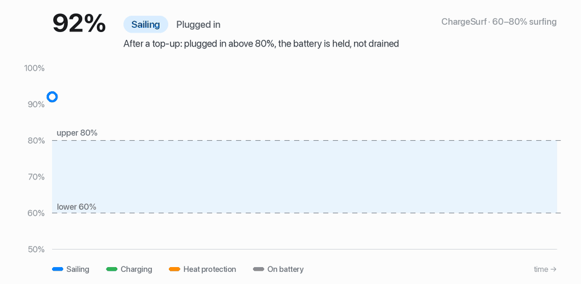
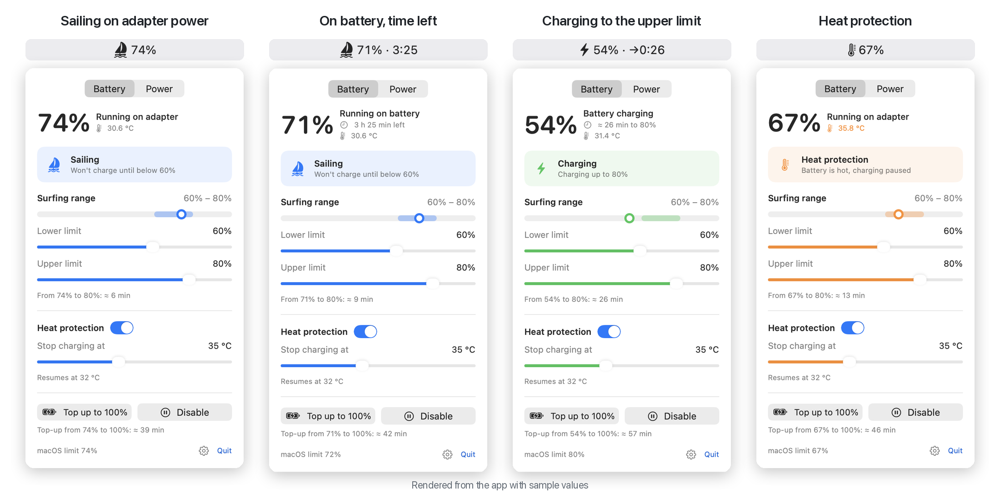

Experimental. Tested on a single Mac so far (MacBook Pro, Apple M5, macOS 27.0). It relies on a private macOS API that Apple can change in any update. Use it at your own risk; bug reports are welcome.
What it does

- Charge range (surfing): charges only after the battery drops below the lower limit (default 60%), then up to the upper limit (default 80%).
- Sailing: plugged in, the Mac runs from the adapter and the battery level is held, neither charged nor drained.
- Heat protection: pauses charging when the battery reaches 35 °C (adjustable) and resumes at 32 °C.
- Top up to 100%: one click before a trip; turns itself off at 100%.
- Menu bar app (English and Turkish): percentage, charging state, temperature, time estimates, power use, charger (USB-PD) details and the devices your Mac charges over USB-C, such as an iPhone, iPad or AirPods case.

ChargeSurf vs. the macOS Charge Limit
Since macOS 26.4, System Settings > Battery has its own Charge Limit. ChargeSurf drives the same macOS mechanism and adds:
| macOS Charge Limit | ChargeSurf | |
|---|---|---|
| Upper limit | 80-100% in 5% steps | any value from 20% to 99% |
| Lower limit | no | yes, from 10% |
| Pause charging when hot | no setting | yes, adjustable |
| One-time top-up to 100% | move the slider by hand | one click, turns itself off |
| Power, charger and USB-C device details | no | yes |
| Price | free, built in | free, open source (GPL-2.0) |
Install
Requires an Apple Silicon MacBook on macOS 27 or later and an administrator account. Quit any other charge limiter first.
git clone https://github.com/mirakoz/ChargeSurf.git
cd ChargeSurf
./build.sh
sudo ./install.sh
./install-app.shA prebuilt zip is on the releases page (not signed by Apple; see the install notes). Uninstall with sudo ./uninstall.sh.
FAQ
How do I limit my MacBook's battery charge to 80% or lower on macOS 27?
For a single cap at 80, 85, 90 or 95%, use System Settings > Battery, the ⓘ button next to Charging. For a cap below 80% (for example 60% or 70%), a range instead of a single cap, or heat protection, install ChargeSurf. Its default range is 60-80%.
Why did my charge limiter stop working after the macOS 27 update?
On macOS 27 release builds, the SMC charge-control keys that many charge limiters wrote directly are restricted to a private Apple entitlement and return kIOReturnNotPrivileged even to root. A limiter now has to use macOS's own charge limit, which is what ChargeSurf does. Check first whether your tool has an update; if you switch, quit the other tool.
Is ChargeSurf an AlDente alternative?
It has a similar core (a charge range, sailing on adapter power, heat protection and a one-time top-up) in a free, open-source app. It is not a copy of AlDente and does not cover everything AlDente offers. See the feature-by-feature comparison with AlDente Pro.
Which Macs does it support?
Apple Silicon MacBook Air and MacBook Pro models on macOS 27 or later. So far it has been tested only on a MacBook Pro with M5; reports from other models are welcome. Intel Macs and older macOS versions are not supported.
Is it free? Does it collect data?
It is free and open source under GPL-2.0. There is no account and no telemetry, and it does not contact any server.
More answers and the technical details are in the README.
Türkçe
ChargeSurf, macOS 27 çalıştıran Apple Silicon MacBook Air ve MacBook Pro'lar için ücretsiz ve açık kaynak bir şarj sınırlayıcı. Pil ömrünü korumak için şarjı seçtiğiniz aralıkta tutar (varsayılan %60-80), prizdeyken pili ne doldurur ne boşaltır, batarya ısınınca şarjı durdurur. Menü çubuğu uygulaması Türkçe ve İngilizce. Kurulum ve ayrıntılar GitHub sayfasında.